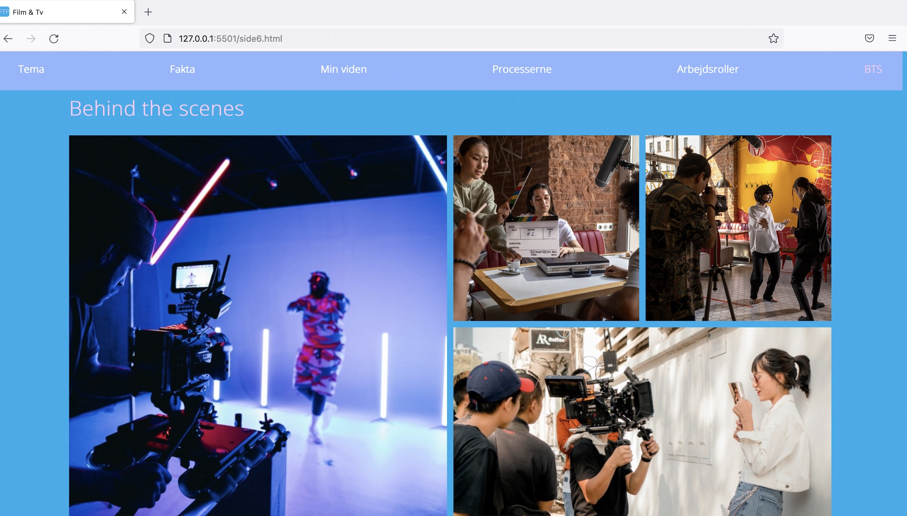
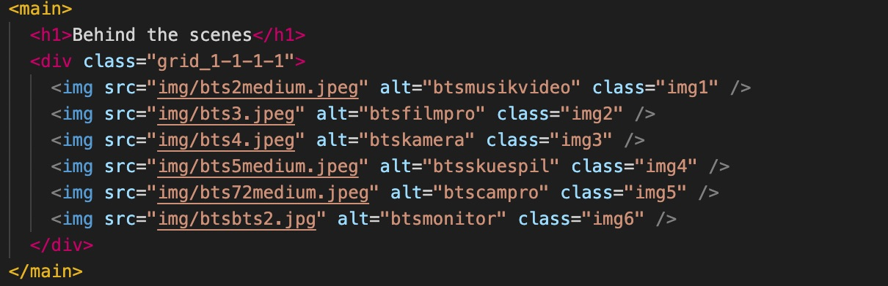
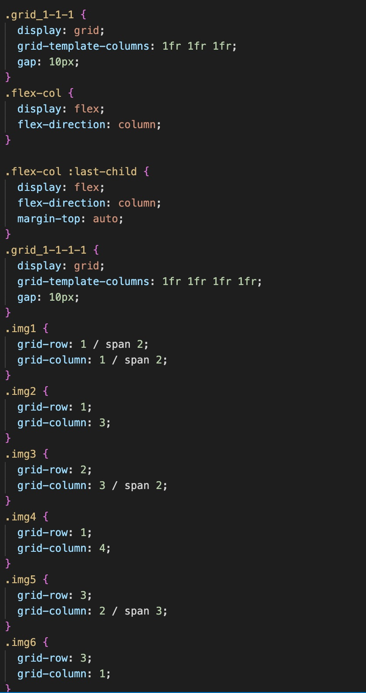

Web
HTML & CSS
I grundlæggende web blev vi introduceret for html og CSS samt design-stilarter. Vi skulle ud fra et selvvalgt emne og en bestemt stil-genre (i mit tilfælde flat design) lave et website og sætte de forskellige sider op i grid. Jeg demonstrerer her hvordan jeg satte min sjette side op i grid med html og css.
Link til Responsive Site v2

Responsive site

HTML
